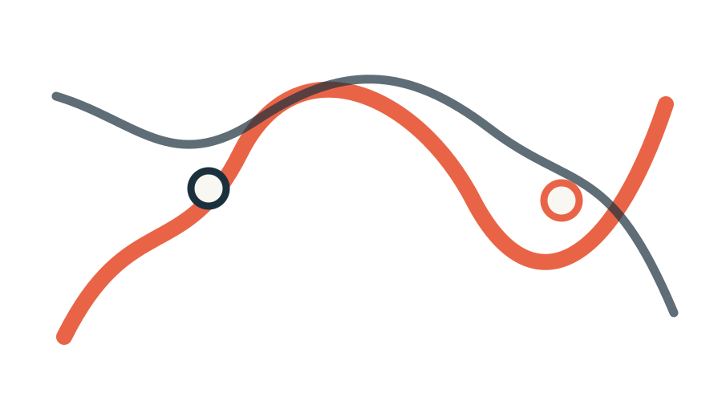

Know what changes.
Announcements, academic reminders and student-life updates are surfaced without the clutter.
Open notifications →CHRIST (DEEMED TO BE UNIVERSITY)
01 · MARIAM NAGAR · GHAZIABAD
A cinematic student hub for academics, events, clubs, campus essentials and the private data that actually belongs to you.
02 · THE CAMPUS SIGNAL
Instead of a flat dashboard, Christ Connect tells a story: notice the signal, move through the campus, find your people, then unlock your private space.
Announcements, academic reminders and student-life updates are surfaced without the clutter.
Open notifications →Events are organised by today, this week, departments, clubs, workshops and more.
Open events →Explore clubs, competitions, communities and peer-to-peer skill exchange.
Explore community →03 · BUILT AROUND STUDENT LIFE
Soft depth, paper textures and glass layers keep the original Christ Connect palette while making the experience feel more alive.


04 · DON'T MISS OUT
See what's happening today and build a quick plan around it.
Today’s events → 02LEARNTurn your spare hour into a new skill, tool or perspective.
Browse workshops → 03BUILDFind technical challenges, teams and opportunities to ship ideas.
See hackathons → 04CREATEDiscover stages, societies, volunteering and campus culture.
Explore fests →05 · FIND YOUR PEOPLE
Keep clubs, communities, competitions and skill exchange close enough to act on.
View clubs & societies →06 · THE FULL PLATFORM
All original feature surfaces are restored below without removing the existing pages.
STUDENT LIFE
PERSONAL SPACE

DELHI NCR · CAMPUS CONTEXT
Campus: Mariam Nagar, Ghaziabad
Nearest metro: Shaheed Sthal NBA Metro Station
Campus phone: 0120 666 6100
PRIVATE WHEN IT MATTERS
Login with your registration number, open your private student space and see the data that belongs to you — profile, attendance, plans and notifications.